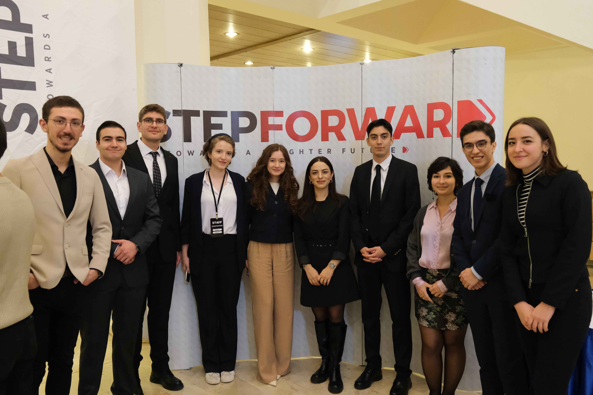

Etkinliklerimiz

22 Eyl 2025
MCT Ankara Türk Traktör
Career Trip şirket gezileriyle öğrencilerin farklı sektör ve kurumları yakından tanımasını sağlar. Stepforward: Türkiye’nin önde gelen isimlerini öğrencilerle buluşturan geniş katılımlı bir konferans serisidir.
Detaylar ve Kayıt
16-18 Eki 2025
MCT Istanbul
Career Trip şirket gezileriyle öğrencilerin farklı sektör ve kurumları yakından tanımasını sağlar. Stepforward: Türkiye’nin önde gelen isimlerini öğrencilerle buluşturan geniş katılımlı bir konferans serisidir.
Detaylar ve Kayıt

6 Ara 2025
StepForward
StepForward Türkiye’nin önde gelen iş, akademi ve kültür dünyasından isimlerini öğrencilerle buluşturarak bilgi ve deneyim aktarımını amaçlayan, gençlerin ilham almasını ve ufuklarını genişletmesini sağlayan, geniş katılımlı ve etkileşimli bir konferans serisidir.
Detaylar ve Kayıt